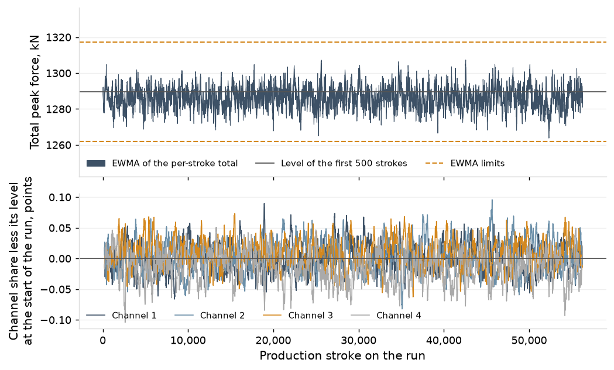
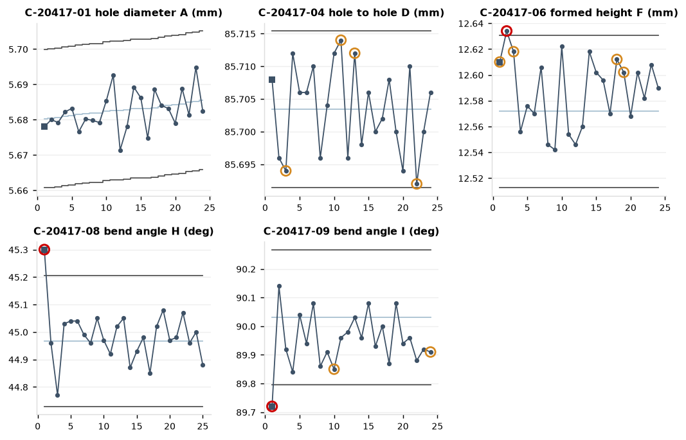

8 rule 1 alarms, including 4 at first piece, and 24 patterns on the run's variable characteristics; the latest 12 are listed, with the first step of the reaction plan for the signal.
| Time | Characteristic | Critical | Check | Flag | Reaction plan, step 1 | Recorded |
|---|---|---|---|---|---|---|
| 2025-12-19 22:58 | C-20417-09 bend angle I | yes | routine | pattern shown: rule 3 | Measure five more consecutive parts on the same gauge | |
| 2025-12-19 21:09 | C-20417-04 hole to hole D | yes | routine | pattern shown: rule 2 | Measure five more consecutive parts on the same gauge | |
| 2025-12-19 17:00 | C-20417-06 formed height F | yes | routine | pattern shown: rule 3 | Measure five more consecutive parts on the same gauge | |
| 2025-12-19 16:02 | C-20417-06 formed height F | yes | routine | pattern shown: rule 3 | Measure five more consecutive parts on the same gauge | |
| 2025-12-19 10:57 | C-20417-04 hole to hole D | yes | routine | pattern shown: rule 2 | Measure five more consecutive parts on the same gauge | |
| 2025-12-19 09:57 | C-20417-07 formed height G | routine | pattern shown: rule 3, rule 4 | Measure five more consecutive parts on the same gauge | ||
| 2025-12-19 09:02 | C-20417-03 hole to hole C | routine | pattern shown: rule 3 | Measure five more consecutive parts on the same gauge | ||
| 2025-12-19 09:02 | C-20417-04 hole to hole D | yes | routine | pattern shown: rule 2 | Measure five more consecutive parts on the same gauge | |
| 2025-12-19 09:02 | C-20417-07 formed height G | routine | rule 1 alarm | Stop the press and hold the parts since the last check | adjustment recorded | |
| 2025-12-19 08:26 | C-20417-07 formed height G | routine | pattern shown: rule 4 | Measure five more consecutive parts on the same gauge | ||
| 2025-12-19 08:26 | C-20417-09 bend angle I | yes | routine | pattern shown: rule 2, rule 3 | Measure five more consecutive parts on the same gauge | |
| 2025-12-19 06:58 | C-20417-03 hole to hole C | routine | pattern shown: rule 3 | Measure five more consecutive parts on the same gauge |
The dies of the parts that run on PR-06, past due first; 0 past due at the board. A die is due when its burr line reaches 80% of the burr limit, counted from the last sharpening.
| Die | Part | Last sharpening | Shots since | Due at (burr at 80% of its limit) | Status | Master interval (strokes) |
|---|---|---|---|---|---|---|
| D-3247-B | P-23247 | 2025-05-18 | 148,638 | 172,811 | 24,173 to go | 189,000 |
| D-2617-A | P-22617 | 2025-09-02 | 253,010 | 333,733 | 80,723 to go | 374,000 |
| D-6076-C | P-26076 | 2024-10-24 | 312,238 | 398,063 | 85,825 to go | 390,000 |
| D-9540-C | P-29540 | 2025-10-29 | 149,847 | 264,041 | 114,194 to go | 314,000 |
| D-0696-C | P-20696 | 2025-05-07 | 187,824 | 331,359 | 143,535 to go | 334,000 |
| D-8553-A | P-28553 | 2025-08-15 | 248,657 | 397,500 | 148,843 to go | 374,000 |
| D-0417-B (on the press) | P-20417 | 2025-09-30 | 383,911 | 615,092 | 231,181 to go | 367,000 |
| D-2558-A | P-22558 | 2025-07-20 | 50,572 | 287,190 | 236,618 to go | 195,000 |
| D-7778-A | P-27778 | 2025-10-05 | 87,080 | 347,160 | 260,080 to go | 343,000 |
| D-6998-B | P-26998 | 2025-11-25 | 0 | 291,551 | 291,551 to go | 268,000 |